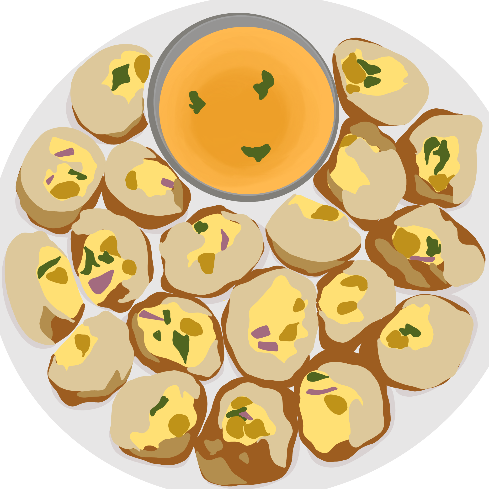
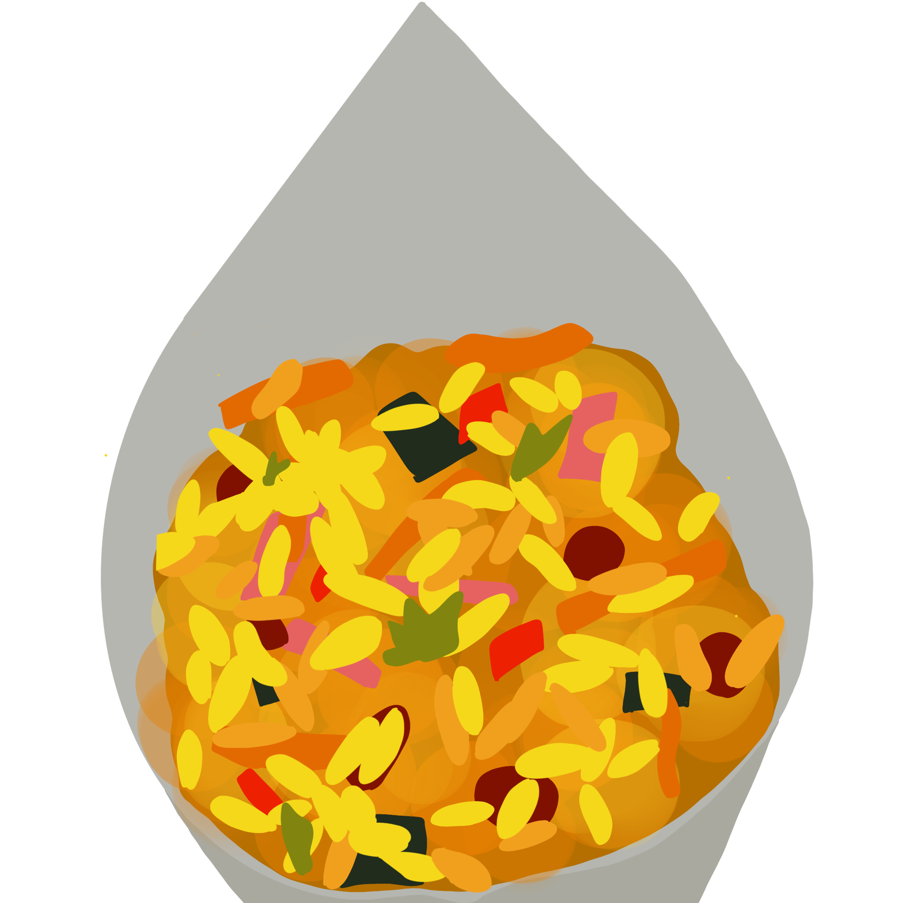
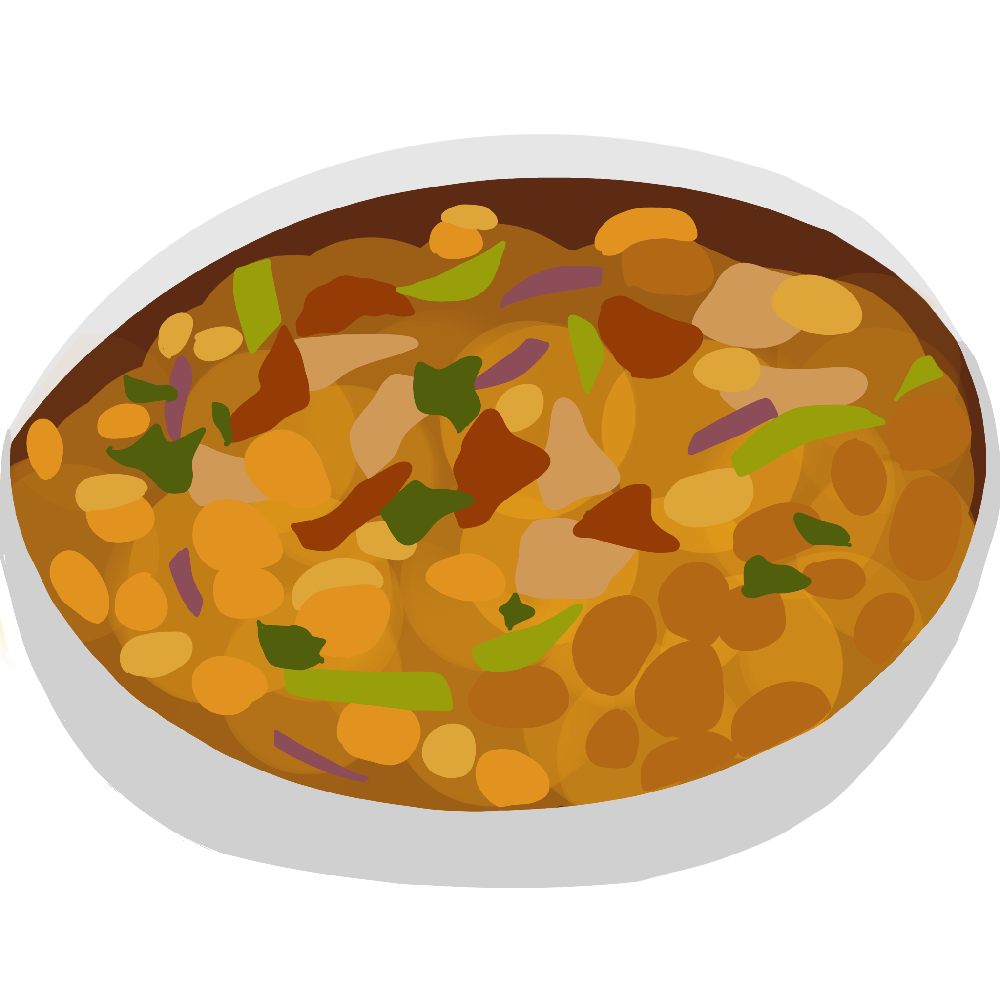

Fuchka
A little bit sweet, a little sour, a little spicy, fuchka is one of the
most ubiquitous street foods in Bangladesh. The crispy, hollow spheres commonly
come with a filling of mashed potatoes and chickpeas, mixed with freshly chopped
onions, cucumber, lime, coriander and green chillies in a chaat masala blend. Before
serving, vendors often grate boiled eggs on top as a garnish. Usually, you'll also
receive a small cup of tamarind water sauce to pour inside the shells to enhance that
sweet, tangy and spicy flavour that tantalises all of your taste buds.
Jhalmuri
Jhalmuri is a popular snack from Bangladesh and India prepared by simply
tossing the selected ingredients together. A simple translation of the name
reveals what it’s all about; jahl means spicy, and muri stands for puffed rice,
which is also the main ingredient of the dish. The recipe here is only a mere
guideline, while the important thing is to balance the textures and flavors correctly.
Apart from puffed rice, other ingredients include roasted peanuts, tomatoes, potatoes,
cucumbers, sliced onions, and various spices such as chaat masala and cumin powder.
This savory snack comes packaged in a thonga—a paper cone, and it can usually be purchased
at various street food stalls.

Bakorkhani
Bakarkhani or baqarkhani, also known as bakar khani roti, is a thick,
spiced flatbread that originated in modern-day Bangladesh during the Mughal
period. With roots in Old Dhaka, the bread has developed several regional
variants throughout the Indian subcontinent. It is a very common breakfast
snack in Old Dhaka, where it is also the most popular. Outside of Dhaka,
Bakarkhani is prepared on certain Muslim religious festivals and is now popular
as a sweet bread across the subcontinent. Bakarkhani is almost biscuit-like in
texture, with a hard crust. The chief ingredients are flour, semolina, sugar,
molasses soaked in saffron, poppy or nigella seeds, salt, and ghee (clarified butter).
Chotpoti
This traditional Bengali dish consists of chickpeas and diced potatoes
that are served in a tamarind-based sauce. Typical additions also include
onions, boiled eggs, sliced green chili peppers, and fresh mint or cilantro,
while the sauce is usually spiced with cumin and chili powder. The whole
dish is occasionally topped with cucumbers, boiled eggs, as well as crackers
or crumbled puri (fuchka)—fried bread shells. Chotpoti is popular in Bangladesh
and West Bengal, and it is typically associated with special occasions such as Eid,
though it is also a favorite everyday snack and a common street food dish.
